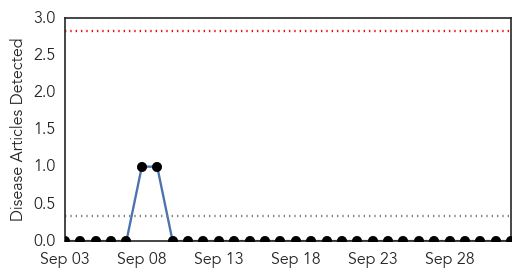

Unknown
30-Day Web Trend
0 alerts, 0 warnings

30-Day Twitter Trend
0 alerts, 0 warnings

Article Locations
Article Confidences
Top Articles:
- 0.998
- MERS patient in Austria assumed infectious on Doha-Vienna flight-WHO
- 0.998
- MERS patient in Austria assumed infectious on Doha-Vienna flight: WHO
- 0.998
- UPDATE 2-MERS patient in Austria assumed infectious on Doha-Vienna flight-WHO
- 0.993
- Respiratory virus seen in 4 deaths
- 0.986
- Doctors: Enterovirus D68 causing respiratory and neurological issues for some Washtenaw County children
- 0.986
- 4 US deaths linked to enterovirus D68 respiratory illness
- 0.975
- NH health officials say Enterovirus has spread
- 0.952
- Wisconsin health officials confirm 5 cases of enterovirus
- 0.951
- Respiratory virus seen in 4 deaths, including RI girl
- 0.949
- Enterovirus link probed in deaths of girl, 3 others
- 0.949
- More cases of Enterovirus in New Hampshire
- 0.949
- CDC testing confirms 25 enterovirus D-68 cases in Michigan
- 0.948
- 500 Sick, Four Dead and Suspected Paralysis Due to Enterovirus D68
- 0.947
- Test results negative for two contacts of MERS patient -Austria
- 0.933
- Health officials probe enterovirus D68 link in 4 deaths
- 0.920
- Questions about tuberculosis after infants exposed
- 0.917
- Chicago Tribune
- 0.917
- Chicago Tribune
- 0.917
- Chicago Tribune
- 0.917
- Chicago Tribune
- 0.917
- Chicago Tribune
- 0.917
- Chicago Tribune
- 0.917
- Chicago Tribune
- 0.917
- Chicago Tribune
- 0.917
- Chicago Tribune
- 0.917
- Chicago Tribune
- 0.917
- Chicago Tribune
- 0.917
- Chicago Tribune
- 0.916
- Rhode Island Child Infected with Enterovirus 68 Dies, Marking 4th Death Linked to the Virus
- 0.909
- CDC seeks cause of paralysis in kids with enterovirus 68
- 0.907
- Trust fights flu this season
- 0.907
- MERS patient in Austria assumed infectious on flight, WHO says
- 0.901
- Rhode Island Child, 10, Dies after Bacterial Infection While Carrying EV-D68
- 0.890
- Conemaugh requires flu shots for all employees
- 0.879
- 4 Confirmed to Have Enterovirus D-68 at Boston Children's Hospital
- 0.877
- Child From Rhode Island Joins Three Other Victims Of Enterovirus D68, What Is Enterovirus D68 & How Can it Be Avoided?
- 0.871
- WBOC-TV 16, Delmarvas News Leader, FOX 21 -
- 0.870
- Enterovirus D68 Case Confirmed In SW Pennsylvania « CBS Pittsburgh
- 0.866
- International Red Cross confirms Swiss killed in Donetsk
- 0.866
- Test results negative for two contacts of MERS patient -Austria
- 0.866
- Environmental advocates carry over their heads a giant purple globe as they participate in the "People's Walk for Climate Justice" in Manila
- 0.866
- Russia's Putin rules out restrictions on capital movements
- 0.866
- Militants take control of western Iraqi town of Hit
- 0.859
- Manitoba Reports Fifth PED Case
- 0.847
- Three Cases Of Enterovirus Confirmed In Manitoba
- 0.842
- Amref Calls For Support To Reduce Maternal Mortality In Africa > Gurtong Trust > Editorial
- 0.773
- AZ health experts dispel fears about enterovirus-68
- 0.762
- Mystery Virus Infects 500 Children in 42 States and DC, Kills 4 — Charisma News
- 0.760
- New vaccine to fight herpes
- 0.745
- Enterovirus Complications Kill Girl
Showing top 50 articles...
Top Tweets:
- 0.854
- .@wolfiemouse Unless you have been in contact with a confirmed person flu-like symptoms will most likely be flu CDCChat
- 0.826
- RT: .@wolfiemouse Unless you have been in contact with a confirmed person flu-like symptoms will most likely be flu CDCChat
- 0.605
- An annual flu shot is the best way to help prevent catching the flu every year. Stay tuned for more flu & cold prevention tips! spon
- 0.575
- .@BloombergNews CDC is urging health workers to ask patients w/ these symptoms (fever severe headache muscle pain) about travel history.
Mumps
30-Day Web Trend
0 alerts, 0 warnings

30-Day Twitter Trend
0 alerts, 0 warnings

Article Locations

Article Confidences

Top Articles:
-
No articles found for Oct 02, 2014
Top Tweets:
-
No tweets found for Oct 02, 2014